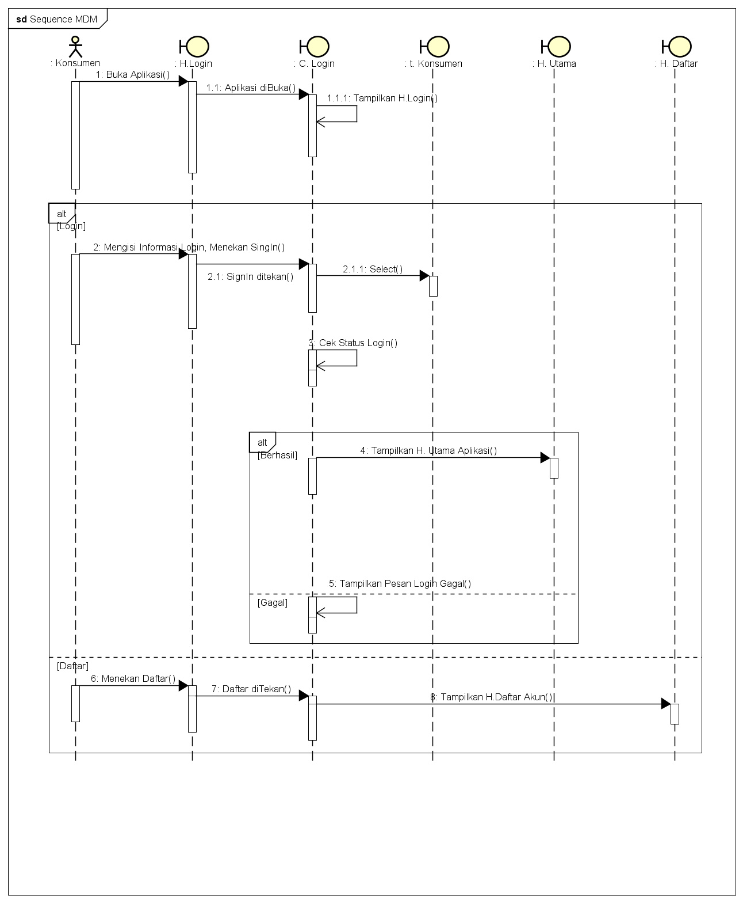

Nim
:
1811500086
Nama
:
Muhammad Dafi Mahendra
Kelompok
:
TI6A
Saduran Atau Rangkuman Saya pada Pertemuan ke-Tujuh yaitu :
Sequence Diagram
Adalah menggambarkan hubungn antara rancangan Dengan kondisi sistem
Class Diagram Download Astah
Class Diagram Download Gambar

© 2021 GitHub, Inc.